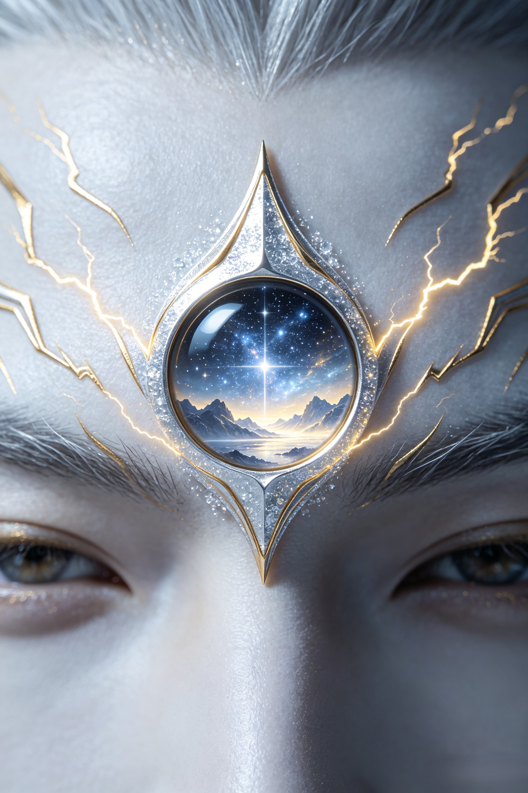

Celestial Arsenal
Forged by immortals. Tempered by discipline. Wielded by the only warrior who ever matched the Monkey King.
Forged in the foundries of the Jade Void Palace and gifted to Erlang Shen by his master Yuding Zhenren. Unlike Sun Wukong's staff — a pillar stolen from the Dragon King's treasury — this spear was made for Erlang Shen alone. Its three points strike simultaneously in three directions, making it nearly impossible to parry. The double edges allow both thrusting and sweeping attacks with equal lethality. In the shapeshifting duel, Wukong's staff met this spear and neither broke — a testament to weapons crafted by immortals who knew exactly who would wield them.
Between Erlang Shen's brows sits a vertical eye — the Heavenly Eye of Truth-Seeing. It pierces every illusion, every transformation, every lie. When Sun Wukong transformed into a temple with a flagpole tail, the third eye saw the monkey beneath the stone. When demons wear human skin, the eye sees the rot within. It is not omniscience — it is discernment, the cultivated ability to distinguish the real from the false. In a celestial court thick with political masks, Erlang Shen's eye makes him dangerous beyond his martial prowess: he sees what everyone else pretends not to see.

No ordinary dog — the Sky-Howling Hound is a divine beast that has accompanied Erlang Shen since his youth. It can track a scent across the boundaries between realms, pursue enemies who have transformed into birds or fish, and its howl can shatter lesser demonic illusions. During the shapeshifting duel, when Wukong dove into a river and became a fish, the Hound was already on the bank, waiting. A general's companion, not a pet. The Hound represents a quality rare among celestial warriors: the loyalty that comes from being chosen, not commanded.
The same sacred art taught to Sun Wukong — Erlang Shen learned the Seventy-Two Transformations from Yuding Zhenren, a master of the Jade Void. Like Wukong, he can become any creature, any object, any element. In their legendary duel, the two shapeshifters chased each other through the entire catalog of earthly forms: hawk to sparrow, fish to crane, temple to wolf. The difference is in application: where Wukong's transformations are playful and chaotic, Erlang Shen's are precise and tactical — a general's mind behind the magic.
Dive Deeper